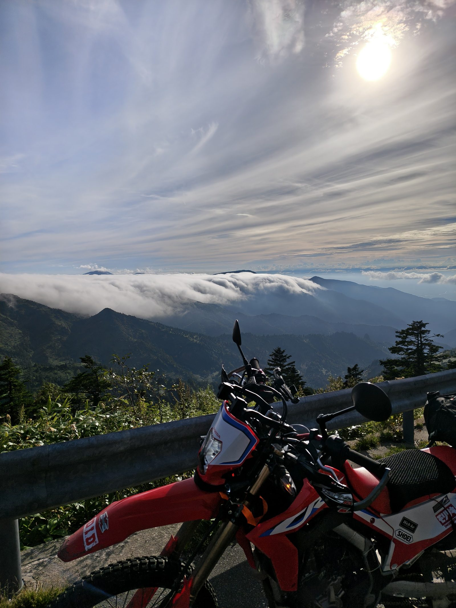
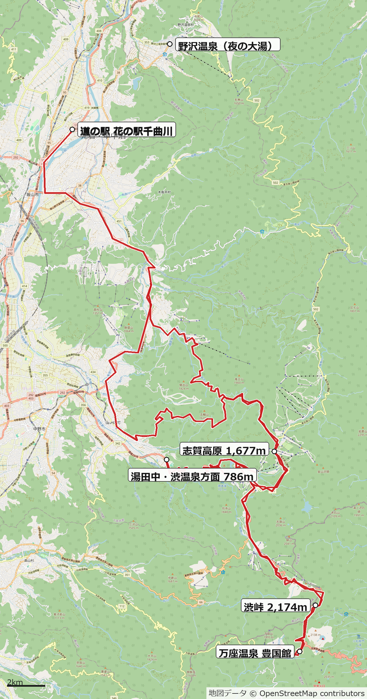
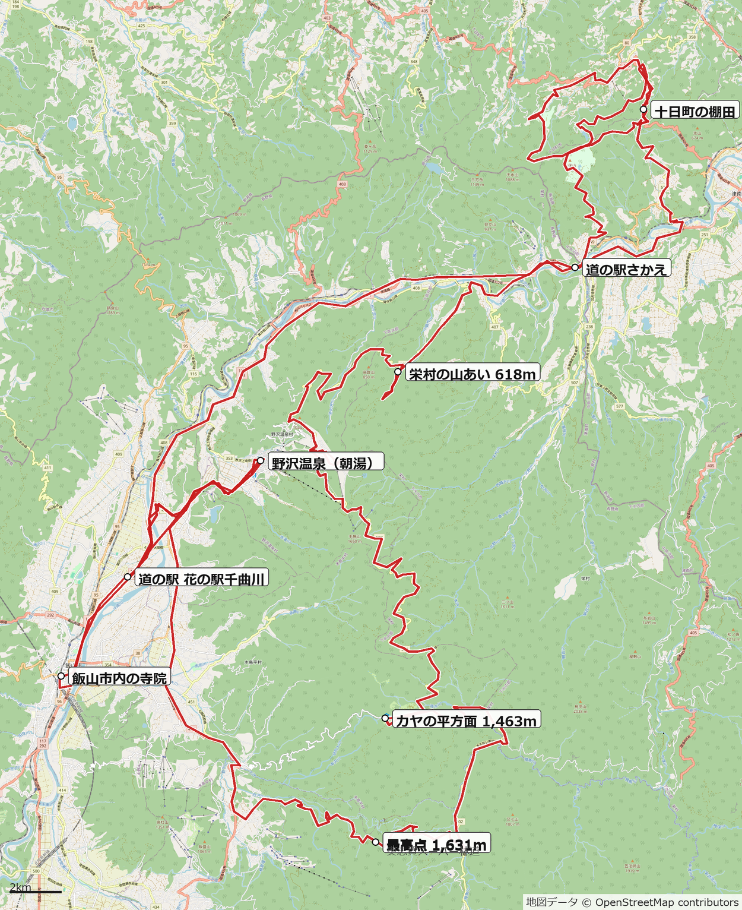

志賀高原・万座温泉・
野沢温泉 ツーリング
CRF250Lの1泊2日 2026年9月18日（金）〜19日（土）
道の駅花の駅千曲川で車中泊 ／ 走った距離 364km
Google フォトでアルバム全体を見る（全10点）
https://photos.app.goo.gl/APnyVuho6v6S4y2C8
写真はタップすると大きな写真が開きます。この冊子の写真はすべて同じアルバムの10点です。
概要
旅の内容
道の駅花の駅千曲川（飯山市）で車中泊をして、そこを拠点に走った1泊2日のツーリング。
1日目は倉下林道から金倉竜王線で志賀高原へ登り、湯田中・渋温泉方面へ一度下りてから国道292号で
渋峠（2,174m）を越え、万座温泉の豊国館で白濁の湯に入った。帰りは金倉竜王線を下って渋温泉へ。
2日目は朝湯のあと丸山林道で標高1,631mの山を越え、カヤの平方面から奥志賀公園栄線（通称・奥志賀スーパー林道）で栄村へ。
津南町・松之山の棚田を回って飯山へ戻り、夕方は飯山市内の灯籠の催しを見て、夜にもう一度野沢温泉に入った。
数字で見る
| 走行距離 | 1日目 136.6km ／ 2日目 227.3km（合計 363.9km）GPS |
|---|
| 最高地点 | 渋峠 2,174m（国道292号・1日目）／ 2日目は 1,631m（丸山林道）GPS |
|---|
| 獲得標高 | 1日目 +3,524m ／ 2日目 +3,782m（5点移動平均で計算）GPS |
|---|
| 入った温泉 | 万座温泉 豊国館（1日目）／ 野沢温泉 大湯（1日目の夜・2日目の朝・2日目の夜） |
|---|
| 宿泊 | 道の駅花の駅千曲川で車中泊（両日とも同じ場所）本人確認 |
|---|
この旅の主役
主役の道と峠
国道292号「志賀草津高原ルート」の渋峠（2,174m、日本の国道の最高地点）を往復2回。
北志賀・山ノ内の林道群（倉下林道・金倉竜王線・丸山林道）と、奥志賀から栄村へ抜ける
奥志賀公園栄線（通称・奥志賀スーパー林道）。2日目の最高点1,631mは丸山林道の上にある。
この旅は「林道を走る旅」だった。
記録の根拠について
各項目のうしろに根拠の印を付けた。GPSは収蔵しているGPXの軌跡、
写真は写真の撮影時刻（EXIF）、地図は地図データで確認した道路名、
本人確認は本人が確認した事実、ChatGPT（あん経由）は旅先でのChatGPTとの会話、
推定はGPSの停車位置からの推定。計画ではなく、実際に起きたことをもとに書いている。
通った道と峠 ①
国道292号・渋峠（2,174m）を往復2回
志賀草津高原ルートの渋峠は、日本の国道の最高地点。1日目は往路で越えて群馬県側の万座温泉へ下り、
復路でもう一度越えた。GPSの最高点は往路・復路とも標高2,174m。復路の渋峠付近では雲海を前に
CRF250Lの写真を撮っている。同じ日、同じ峠を2回越えるという、バイクならではの走り方になった。
倉下林道と金倉竜王線 ― 昼に調べた道を、その日のうちに走った
道の駅でカレーを食べた直後の11:29、本人はChatGPTに丸山林道・倉下林道・金倉林道の通行状況を
調べさせている。調べ終えてから約1時間後の12:33に倉下林道（標高1,172m）、12:50に金倉竜王線
（標高1,452m）を走り、13:11に発哺・志賀高原へ出た。帰りは16:43にもう一度金倉竜王線を下っている。
つまり、その日の昼に調べた「通れるかどうか」を、その日のうちに確かめに行ったことになる。
金倉竜王線は全長14.80km、最高標高1,644mの林道である。
通った道と峠 ②
丸山林道と奥志賀・カヤの平 ― 2日目の山越え
2日目は野沢温泉を07:43に出て、飯山野沢温泉線から丸山林道へ。08:20に林道へ入り（標高1,015m）、
08:41に標高1,631mの最高点を越えて、08:43まで丸山林道を走った。そのあと奥志賀公園栄線
（通称・奥志賀スーパー林道）に移り、09:06に木島平村側へ抜けて、カヤの平方面の高台（1,463m）で
16分停車。10:01には標高1,570mの高所を通り、栄村の山あいへ下りていった。
道路名は地図データの逆引きで確認した。08:20〜08:43の区間（最高点1,631mを含む）は
丸山林道、09:06以降は奥志賀公園栄線で、
その通称が奥志賀スーパー林道（同じ道）。本人の記憶と地図の食い違いは、
この確認で解消している。
本人確認地図
秋山郷・津南・十日町の山道
栄村の山あいで41分停まり（11:06〜11:47、標高618m）、道の駅さかえできのこそば。
午後は津南町から国道405号で松之山方面へ入り、棚田のそばでバイクを停めた。
国道117号で津南町を抜けて飯山へ戻る、ぐるりと回るコースだった。
9月18日（金）― 林道から渋峠、万座温泉へ
- 11:26道の駅花の駅千曲川（飯山市）のレストランで野菜カレー写真
- 11:29ChatGPTに丸山林道・倉下林道・金倉林道の通行状況を調べさせるChatGPT（あん経由）
- 11:47道の駅花の駅千曲川を出発（標高323m）GPS
- 12:18国道403号で夜間瀬（山ノ内町）を抜ける（標高719m）GPS地図
- 12:33倉下林道を登る（標高1,172m）GPS地図
- 12:50金倉竜王線を登る（標高1,452m）GPS地図
- 13:11発哺・志賀高原に出る（標高1,652m）GPS地図
- 13:20〜13:47国道292号を湯田中・渋温泉方面へ下りて引き返す（標高786mまで）GPS
- 13:59国道292号で標高1,956mまで登り直すGPS
- 14:04渋峠（標高2,174m、国道292号）GPS
この日の走行は136.6km（記録のある区間）。17:30に標高658mで記録が途切れ、
19:13の野沢温泉のあと20:40に道の駅へ戻っているため、その間の移動はGPSに残っていない。
続きは次のページ。
9月18日（金）つづき ― 万座温泉から渋温泉へ
- 14:16〜15:30万座温泉・豊国館に停車。14:24 白濁の内風呂に入るGPS写真本人確認
- 15:42渋峠へ戻る（標高2,174m、この日の最高点）GPS
- 15:44渋峠付近で雲海とCRF250Lを撮る（標高2,148m）写真
- 16:05志賀1号トンネルを抜ける（標高1,518m）GPS地図
- 16:43金倉竜王線を今度は下る（標高1,259m）GPS地図
- 17:03渋温泉付近へ下りる（標高804m）GPS地図
- 17:30国道403号（標高658m）でこの日の記録が途切れるGPS
- 19:13野沢温泉 大湯（夜の入浴）写真
- 20:40道の駅花の駅千曲川に帰着。車中泊GPS本人確認
9月19日（土）― 標高1,631mの山越えと棚田
- 06:14道の駅花の駅千曲川で記録が再開（車中泊明け）GPS
- 07:19〜07:43野沢温泉 大湯で朝湯GPS推定
- 07:55飯山野沢温泉線で南へGPS地図
- 08:20丸山林道に入る（標高1,015m）GPS地図
- 08:41丸山林道の標高1,631mの最高点を越える（08:43まで丸山林道）GPS本人確認
- 09:06奥志賀公園栄線（通称・奥志賀スーパー林道）で木島平村側へ抜ける（標高1,219m）GPS地図
- 09:26〜09:41カヤの平方面の高台で16分停車（標高1,463m）GPS地図
- 10:01標高1,570mの高所を通過GPS
- 11:06〜11:47栄村の山あいで停車（標高618m）GPS
- 12:03〜12:45道の駅さかえ（栄村）。12:10 きのこそばGPS写真本人確認
この日の走行は227.3km（06:14〜20:24）。続きは次のページ。
この日の走行は227.3km（06:14〜20:24）。うち08:23〜16:54の連続した記録が168.3kmで、
栄村・津南町・飯山市の3つのトラックに分かれている。朝の野沢温泉と夕方の往復は、
前日夜からの全日記録の側に入っている。
9月19日（土）つづき ― 棚田から飯山、野沢温泉へ
- 13:02〜13:23津南町から国道405号で松之山方面へGPS地図
- 13:27十日町市松之山の棚田でバイクを停める写真地図
- 13:43〜14:23標高834mの地点で40分停車GPS
- 15:16国道117号で津南町を抜けるGPS地図
- 15:21〜15:47道の駅さかえに再び停車GPS
- 16:23〜16:54道の駅花の駅千曲川に戻るGPS
- 17:56飯山市内の寺院で山門・仁王像・灯籠の催し写真
- 19:57野沢温泉に停車（夜の入浴）GPS推定
- 20:24道の駅花の駅千曲川に帰着して記録終了。この日も車中泊GPS本人確認
2日目の走行は227.3km。うち08:23〜16:54の連続した記録が168.3kmで、
栄村・津南町・飯山市の3つのトラックに分かれている。
9月18日 11:26 道の駅花の駅千曲川で野菜カレー
写真をタップすると大きな写真が開きます
出発前の昼食。道の駅花の駅千曲川のレストランで野菜カレーを食べた。窓の外には千曲川と山並み。この3分後、林道の通行状況を調べている。
9月18日 14:24 万座温泉・豊国館の白濁の湯
写真をタップすると大きな写真が開きます
渋峠を越えて群馬県側の万座温泉へ下り、豊国館の内風呂に入った。木の湯船に白く濁った湯。標高1,700mを超える温泉地の、硫黄の香りのする湯だった。
9月18日 15:44 雲海とCRF250L
写真をタップすると大きな写真が開きます
復路の渋峠付近（標高2,148m）。眼下に雲海、上に刷毛で掃いたような巻雲。この旅を代表する1枚。赤いCRF250Lが小さく見える。
9月18日 19:13 野沢温泉 大湯（夜）
写真をタップすると大きな写真が開きます
夜の野沢温泉。共同浴場「大湯」の入口。明かりに照らされた木の湯屋。このあと道の駅花の駅千曲川へ戻って車中泊した。
9月19日 12:10 道の駅さかえできのこそば
写真をタップすると大きな写真が開きます
栄村の道の駅さかえで昼食。きのこがたっぷり乗った温かいそば。山あいの林道を走って下りてきたところで食べた一杯。
9月19日 13:27 棚田とバイク
写真をタップすると大きな写真が開きます
十日町市松之山の棚田。稲刈りが終わった田んぼが段になって山の斜面に続く。ここは国道405号の山道の途中。棚田の固有名は本人未確認のため書いていない。
9月19日 17:56 飯山市内の寺院の山門
写真をタップすると大きな写真が開きます
夕方の飯山市内。門の前に灯籠が並び、境内へ参道が続いていた。寺院の名称と催しの名前は本人未確認のため書いていない。
9月19日 17:56 山門の仁王像
写真をタップすると大きな写真が開きます
山門の仁王像（吽形）。夕方の光の中で、間近に見上げた。
9月19日 17:56 芝生に並ぶ灯籠
写真をタップすると大きな写真が開きます
境内の芝生に、色とりどりの灯籠が並んでいた。ひとつずつ手描きの絵が入っている。
9月19日 17:58 灯籠の広場と夕暮れ
写真をタップすると大きな写真が開きます
灯籠の並ぶ広場。空はもう夕暮れ。このあと野沢温泉へ戻って夜の湯に入り、道の駅花の駅千曲川へ帰った。
林道の調査 ― 旅先でのChatGPTとの会話
出典：ChatGPTの会話「丸山林道通行状況調査」（2026年9月18日 11:29）と
「Googleマップのツーリング失敗」（2026年9月21日）。2026年11月15日に本人のChromeで確認した内容を、
あん（Muse）が抜粋して渡したもの。ChatGPT（あん経由）
当日の昼 ― 通れるかどうかを調べた
カレーを食べた直後の11:29、丸山林道・倉下林道・金倉林道が通行できるか、今年の記録や
自治体のホームページで調べさせた。
結果は、全面通行止めではないが、山ノ内町が路面状態劣悪として注意を出している区間がある、
というものだった。丸山林道（林道丸山中津川線）は中津川線分岐点〜剣沢ダム入口、
倉下林道は三日月池・アワラ湿原駐車場〜金倉竜王線合流地点が「路面状態劣悪」。
金倉竜王線は全長14.80km・最高標高1,644mで、通行止めの公式情報はなし。
路肩の崩落や路面のクラック、ガードレールのない崖側の区間があるという内容だった。
推奨ルートは、渋温泉・湯田中 → 金倉竜王線 → 倉下林道 → アワラ湿原・三日月池 →
竜王・小丸山 → 丸山林道 → 奥志賀・カヤの平 → 野沢温泉。
林道の調査 ② ― 旅のあとの確認
2日後 ― 実際に通れた
旅の2日後（9月21日）の会話で、本人が「金倉竜王線は、実際行ってみたところ通行可能でした」と
確認している。別のAIが「通行止め」と答えたのは誤りだった、という検証のやり取りだった。
GPSの記録もこれと合う。1日目は12:50と16:43に金倉竜王線、12:33に倉下林道を走っており、
2日目は08:20から丸山林道に入っている。
この旅のあとで分かったこと：昼に調べた「たぶん通れる」は、その日のうちに
「通れた」に変わり、2日後の会話で「通行可能だった」と確定した。林道は情報より現地、という記録である。
出典（ChatGPTの会話）
① 丸山林道通行状況調査（2026年9月18日 11:29）
https://chatgpt.com/c/6aaca1c9-7828-83ee-b648-8d861c57b848
② Googleマップのツーリング失敗（2026年9月21日）
https://chatgpt.com/c/6aae3cc0-3d7c-83e8-8bdf-139affbe72e8
会話の内容はあん（Muse）が本人のChromeで読み取り、要点・日時・出典の形で抜粋して渡したもの。
ヘルメスはChatGPTの会話を直接読んでいないため、この冊子では抜粋の範囲だけを書いている。
温泉と宿
万座温泉・豊国館（1日目 14:24）
渋峠を越えて群馬県側へ下りた標高1,700m超の温泉地、万座温泉。入ったのは豊国館。
内風呂は木の湯船で、湯は白く濁っていた。写真の撮影時刻は14:24、GPSでは14:16〜15:30が
停車（記録の途切れ）になっている。写真GPS本人確認
野沢温泉・大湯（3回）
野沢温泉の共同浴場「大湯」に、1日目の夜（19:13、写真）、2日目の朝（07:19〜07:43）、
2日目の夜（19:57前後）と3回立ち寄っている。朝と夜はGPSの停車位置からの推定。
1日目の夜は入浴のあと道の駅花の駅千曲川まで戻って車中泊した。写真GPS推定
宿泊
宿は取らず、両日とも道の駅花の駅千曲川で車中泊。1日目は20:40に帰着して
そのまま就寝、2日目は06:14に記録が再開している。標高321m、千曲川のほとりの道の駅である。
GPS本人確認
車中泊は9月でも山あいは冷える。標高2,000mを越える峠を走った日は、
下界の道の駅に戻って泊まるという選び方が効いている。
走行データ
| 日 | 記録区間 | 距離 | 獲得標高 | 最高標高 | 記録時間 |
|---|
| 9/18（金） | 11:47〜17:30 | 136.6km | +3,524m | 2,174m | 5時間44分 |
| 9/19（土） | 06:14〜20:24 | 227.3km | +3,782m | 1,631m | 14時間10分 |
| （内数）9/19 | 08:23〜16:54 連続記録 | 168.3km | +2,898m | 1,631m | 8時間31分 |
数値は収蔵しているGPXデータ（「道の駅花の駅千曲川 志賀高原の林道-1／-2」「栄村」「津南町」「飯山市」）から
計算した。時刻はUTCをJSTに直したもの。獲得標高は5点移動平均をかけてから積み上げている（生の差分合計はノイズで膨らむため）。
停車中の記録が途切れている区間があるので、距離は「記録に残っている区間」の値である。
この旅のハイライト
① 昼に調べた林道を、その日のうちに走った（12:33 倉下林道 → 12:50 金倉竜王線）。
② 同じ日に渋峠（2,174m）を往復2回。復路では雲海の上に出た。
③ 2日目は標高1,631mの山越えから棚田まで、山と里を一日で走った。
この冊子で確認できていないこと
- 飯山市内の寺院の名称と、灯籠の催しの名称（本人未確認のため書いていない）
- 十日町市松之山の棚田の固有名（同上）
- 1日目17:30〜20:40の移動経路（GPSの記録が途切れている）
記録について
写真の扱い
この冊子の写真は、Googleフォトの共有アルバム「飯山花の駅 野沢 万座温泉」（全10点）から
1点ずつ取得した。撮影時刻は元画像のEXIFから読み、埋め込み用の画像からはEXIFとGPSを除去している。
写真はトリミングしていない（全体が入るように縮小・配置している）。
写真
個人情報
宿の予約情報・氏名・自宅の住所・予約番号は、この冊子にもWeb版にも入れていない。
地図に出しているのは走った道と立ち寄った場所だけで、自宅の位置は含まれていない。
この冊子は 2026年11月15日 に、収蔵しているGPX（GPS DATA 2026年11月15日.gpx）と
共有アルバムの写真、あん（Muse）が渡したカレンダー情報・ChatGPTの抜粋から作成した。
GPS軌跡 9月18日（1日目）

1日目の軌跡（136.6km）。道の駅花の駅千曲川から夜間瀬を抜けて倉下林道・金倉竜王線で
志賀高原へ登り、湯田中・渋温泉方面へ下りてから渋峠を往復、万座温泉の豊国館へ寄った動きが見える。
この軌跡図は収蔵しているGPXデータから作成したもの（地図データ © OpenStreetMap contributors）。
GPS軌跡 9月19日（2日目）

2日目の軌跡（227.3km）。野沢温泉から丸山林道で1,631mの山を越え、カヤの平方面から
奥志賀公園栄線（通称・奥志賀スーパー林道）で栄村へ。津南町・松之山の棚田を回って飯山へ戻り、夕方にまた野沢温泉へ向かっている。
この軌跡図は収蔵しているGPXデータから作成したもの（地図データ © OpenStreetMap contributors）。